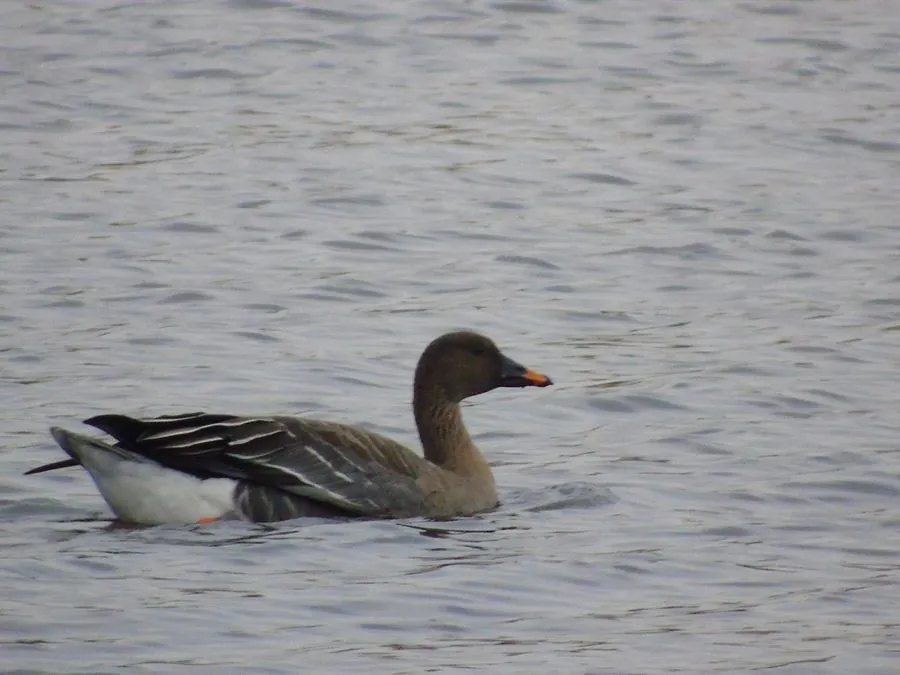

鸟类 · 动物界
豆雁 Anser fabalis

欧亚大陆常见的大型雁类，喙黑而中部有一道橙黄环带，迁徙时排成人字队形，秋季常在收割后的豆田麦田捡食落粒。
- 分类
- 门脊索动物门纲鸟纲目雁形目科鸭科属雁属
- 栖息环境
- 繁殖于苔原与泰加林沼泽；越冬于湖泊、河滩、草洲与农田
- 地理分布
- 欧亚大陆北部繁殖，西欧、中亚、中国东部与日本越冬
- 保护级别
- IUCN 无危（LC）；中国列为有重要生态、科学、社会价值的陆生野生动物
物种志
豆雁体长 66–89 厘米，翼展 1.4–1.7 米，体重 2.2–4.5 千克，是体型较大的雁类。体羽灰褐，背与翼覆羽有浅色羽缘形成鳞状斑，腹面浅灰，尾上覆羽白色，尾端黑色；头颈深褐色，喙黑色，喙中部有一道明显的橙黄色环带，脚橙黄。飞行时可见翼下前缘较暗、后缘银灰。
豆雁繁殖于欧亚大陆北部的苔原与泰加林沼泽，冬季南迁至欧洲、中亚、中国东部与日本。迁徙时结成数十至数百只的群体，排成“人”字或“一”字队形，由经验丰富的个体领飞。食性以植物为主，取食草叶、根茎、水生植物和农作物，秋季常在收割后的豆田、麦田捡食落粒，“豆雁”之名即由此而来。每窝产 3–6 枚卵，雌鸟孵卵约 27 天。作为常见的狩猎鸟种，其种群受湿地围垦与过度捕猎影响。
形态与习性
- 体长约 66–89 cm，翼展 1.4–1.7 m
- 体重约 2.2–4.5 kg
- 食性草叶、根茎、水生植物与豆麦等农作物落粒
- 繁殖每窝 3–6 枚卵，雌鸟孵卵约 27 天
- 识别特征喙黑色而中部有一道橙黄色环带
- 迁徙队形常排成“人”字或“一”字，群体数十至数百只
- 寿命野外约 10 年，最长记录超过 20 年
趣味知识
- 豆雁的喙中段有一圈橙黄色，像给黑喙系了条腰带。
- 秋天它们成群落在收割后的豆田里捡豆粒，“豆雁”因此得名。
- 迁徙时雁群会轮换领飞，后面的个体借着前者的尾流省力。